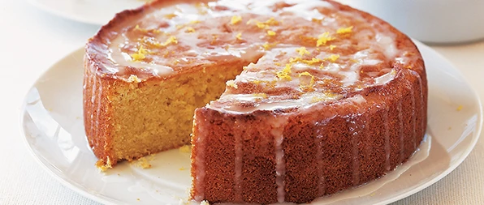

Low Fodmap Lemon Drizzle

With a special surprise ingredient, this gluten free cake stays beautifully moist.
To everyone’s amazement it's mash potato!
- Prep: 30 minutes
- Cook: 40 minutes inluding cooking potato
- Difficulty: Easy
- Serves 8-10
- Freezable (without drizzle)
- Gluten-free
- Nut-free
Nutrition: per serving
- kcal 514
- fat 36g
- saturates 2g
- carbs 41g
- sugars 35g
- fibre 2g
- protein 9g
- salt 0.88g (low)
Ingredients
- 200g butter, softened
- 200g golden caster sugar
- 4 eggs
- 175g ground almond switch for polenta or wheat-free flour to make this recipe nut-free
- 250g mashed potato
- zest 3 lemons
- 2 tsp gluten-free baking powder
For the drizzle
- 4 tbsp granulated sugar
- juice 1 lemon
Method
- Heat oven to 180C/fan 160C/gas 4.
- Butter and line a deep, 20cm round cake tin.
- Beat the sugar and butter together until light and fluffy.
- Gradually add the egg, beating after each addition.
- Fold in the almonds, cold mashed potato, lemon zest and baking powder.
- Tip into the tin, level the top.
- Bake for 40-45 mins or until golden and a skewer inserted into the middle of the cake comes out clean.
- Turn out onto a wire rack after 10 mins cooling.
- Mix the granulated sugar and the lemon juice together
- Then spoon over the top of the cake, letting it drip down the sides.
- Let the cake cool completely before slicing
Click Me